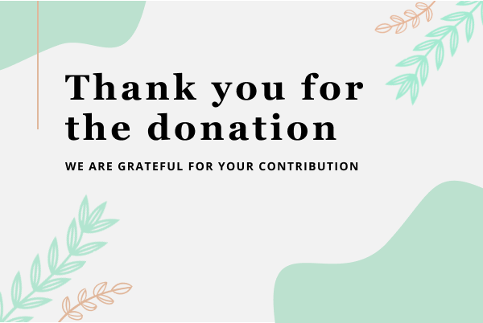
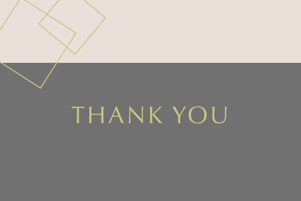
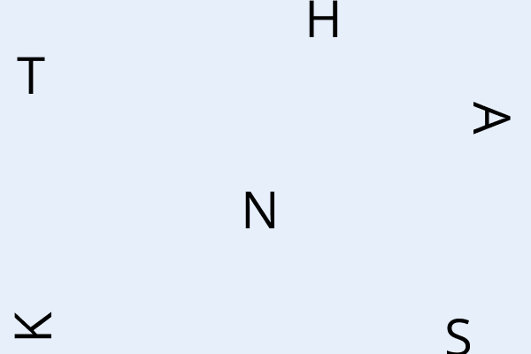
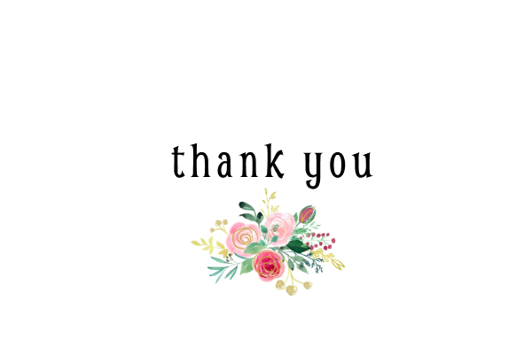
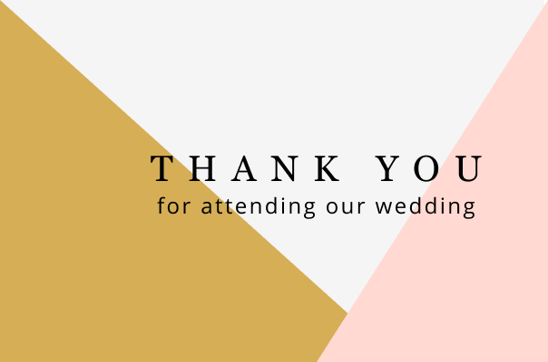

Thank You Cards
    Made with Figma
PROBLEM
Bento, a tool part of Booz Allen's IT Modernization offering, had no way to track data updates or model changes.
REQUIREMENTS
• Determine information relevant to version control
• Design a high-fidelity prototype of the widget
• Gather coding requirements for the widget's development
SOLUTION OVERVIEW
• Log of every uploaded change to the visualization (model version history)
- Data updates
- Variable weight changes
- Disposition modifications
• Log is visible to both the product team and to the client
- Track changes over time; ability to toggle between versions
- Compare widgets/models to select most appropriate
• Model editing is limited to the product team (model version control)
- The client can view changes but cannot edit the model
- The product team uploads the model and briefly describes the edits
• Introduce logins for the product team when editing the model
- Record editing: who, what, and when